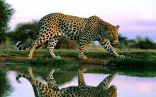

体长1-1.7米，尾长0.7-1.0米，健康体重60-100公斤左右，最重可达130公斤。躯体细长，四肢粗短有力，爪强锐。
头圆较大，颈稍短，四肢强壮，前肢较后肢略宽大，前足5趾，后足4趾，趾上均具灰白色锐爪。趾间、趾掌垫间长有浓密的短毛。
毛色：头部毛短，鼻端裸露呈肉色。鼻部毛极短，为黄色，上无黑斑点。嘴的侧上方各有5排斜形白色胡须。额部、眼间、眼下及颊部均布满小黑斑点。耳背黑色，耳尖黄色，耳的基部也为黄色，并具稀疏的小黑点。颈背部黄色稍深，上具黑斑点和黑环圈，常常在颈背中央有毛旋。颈下为浅黄色，有数块不成形的黑斑，毛略长。前肢外侧棕黄、内侧乳白，肩部有黑环圈，腿部内外均有黑斑点。上部斑点较大而疏，下部斑点较小而密。背部黄色最深，背脊中央黑环不清晰，长形的黑斑排列似纵线状，背脊两侧的黑环圈多为椭圆形，胸侧、腹侧的黑圈似圆形和梅花状。胸腹部毛长，色乳白或淡黄，上具少量的、较大的黑块斑。后肢外侧黄色，内侧淡黄，股部黑环圈和黑色斑相间，胫部内侧为黑褐色。尾背部毛色深黄，靠近基部的黑斑成条状，中部黑斑较大，有的黑斑形成圈状，端部为黑色，上有2~4道窄白环。尾下乳白色，具黑斑。尾顶端为白色。眼上有十余根白色眉须。
眼虹膜呈黄色。强光照射下瞳孔缩为圆形。夜晚眼睛可有磷光闪耀。
舌表面长有许多角质化小刺，倒生。腹下有3对乳头。
肛门褶皱部有一对腺体孔。
头骨：颅形略长。吻部短。鼻骨较长，鼻骨额突与上颌骨额突几等长。额骨面较平，眶后突比颧骨眶突钝、眼窝似圆形。成兽的人字嵴、矢状嵴发达。上枕骨中央有一较明显的枕突。枕部呈一等边三角形。听泡长而高，翼骨的突起向后伸出如钩状。下颌下缘略呈弧形。
牙齿：门齿横列，最中央的一对门齿较小，第二门齿稍大，最外侧的门齿大而尖。犬齿发达、锋锐，呈圆锥状。上颌第一前臼齿缺如，第二前臼齿最小，个别的缺如。第三前臼齿呈“山”字形，中央齿尖高大，前后各有一小齿尖。第四前臼齿（上裂齿）最大，具5个齿尖，其中4个齿尖纵列一线，第二齿尖高大，靠近内侧还有一较低齿尖。臼齿较小，仅一枚，位置横列。下颌前臼齿仅2枚，均呈“山”字形，3个齿尖，中间齿尖最大。臼齿一枚形大，呈“凹”字形，前后各有一几乎等大的齿尖。